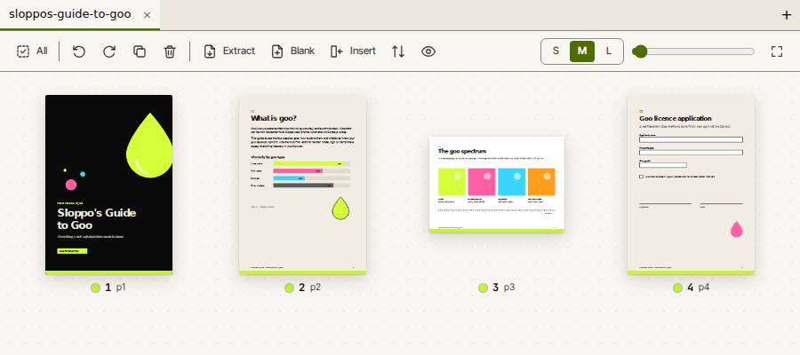

Pages
Merge files, reorder pages by dragging, rotate, duplicate, delete, and split by ranges, by every N pages, or into separate files. Undo covers every change.
Slopographic app
Merge, split, annotate, redact and fill PDFs in your browser. Nothing is uploaded.

Merge files, reorder pages by dragging, rotate, duplicate, delete, and split by ranges, by every N pages, or into separate files. Undo covers every change.
Add text, pen, highlighter, shapes, images and signatures. Draw a signature, type one, or keep a saved signature in this browser.
Fill text, checkbox, dropdown and radio fields, and keep them editable or flatten them. Open password-protected files with RC4 or AES encryption.
Mark areas by hand, or search for text, patterns and presets such as e-mail addresses and card numbers. Applying a redaction removes what is under the box from the saved file.
Compress a file, export pages as PNG or JPEG, make a PDF from images, and extract the text.
| Feature | Slop PDF | Typical desktop PDF editor |
|---|---|---|
| Merge, split, reorder and rotate pages | Yes | Included |
| Text, pen, highlight, shape, image and signature annotations | Yes | Included |
| Fill and keep form fields | Yes, text, checkbox, dropdown, radio | Included |
| Open password-protected files | Yes, RC4 and AES | Included |
| Redaction that removes the content under the box | Yes, marked pages become images | Varies by edition |
| Find and redact by pattern (e-mail, card numbers) | Yes | Varies by edition |
| Compress, export pages as images, images to PDF | Yes | Included |
| Page numbers, watermarks and metadata | Yes | Included |
| Edit existing text in place | No, text can be added | Included |
| Keep bookmarks and tagged structure | Not yet | Included |
| Runs in a browser, with nothing to install | Yes | Not included, desktop install |
| Works offline from one HTML file | Yes, sends no requests once loaded | Included, installed program |
| No account, no upload of your files | Yes | Usually needs a license key or activation |
| Editing on a phone | Yes, touch, long-press to reorder, pinch to zoom | Varies by product |
| Command search and rebindable shortcuts | Yes | Varies by edition |
Slop PDF column: "Yes" means the feature is in the app now. "No" and "Not yet" are listed honestly, with the details in the section below.
Nothing is uploaded. There are no accounts. Your PDFs, annotations and saved signatures stay in this browser, and Slop Drive keeps files on this device. No tracking runs unless the owner has turned it on in Settings.